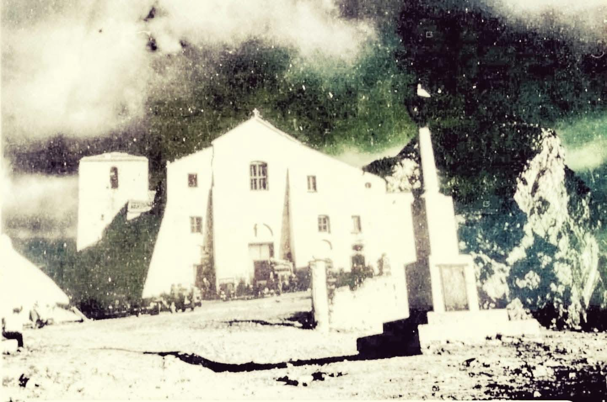
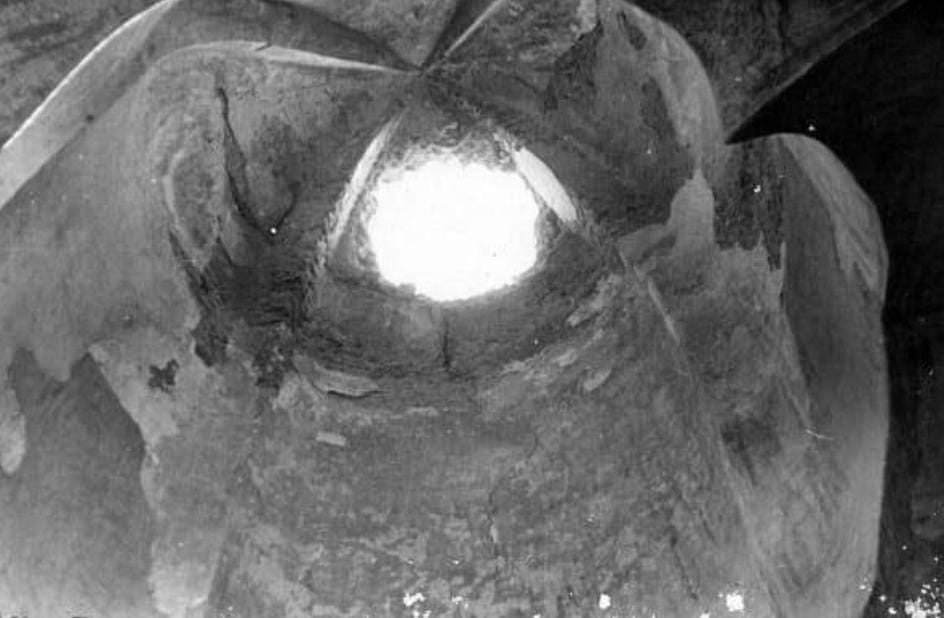

Addossato al corpo principale del Santuario si erge un grande cenobio (dal greco, luogo di vita comune), eretto con l’intento di dare continuità al culto della Basilica; il Vescovo Michele Barone, infatti, stabilì qui la sua residenza e pensò questo edificio per ospitare l’intero capitolo dell’Antica Cattedrale.
Preesistente all’intera costruzione e probabilmente già presente nell’VIII sec., tra il cenobio e la Basilica, con ingresso dalla Cappella della Madonna del Granato, si innalza un pregevole battistero.
Il battistero, una volta separato dal corpo principale della Chiesa, presenta un impianto a croce greca con una parete absidata ed è sormontato da una particolarissima cupola molto slanciata a “pan di zucchero”.
Rimaneggiata più volte durante i secoli, questa particolare struttura è da attribuire senza dubbio alla presenza basiliana prima che il complesso fosse elevato al rango di Chiesa Cattedrale.
La vasca battesimale (piscina per immersione) è oggi coperta dal pavimento, che fu sopraelevato, per esigenze tecniche, durante la costruzione dell’annesso cenobio.
Durante la Seconda guerra mondiale, nelle operazioni di sbarco alleato del 1943, il Santuario fu colpito da due bombe, una che distrusse parzialmente la torre campanaria e un'altra che perforò la cupola del battistero senza esplodere.
L’evento fu letto come un segno miracoloso (numerose erano le persone che trovavano rifugio in Chiesa durante i bombardamenti) tanto che il Generale Clark, comandante delle operazioni alleate, si prodigò con una cospicua donazione per la riparazione del danno.